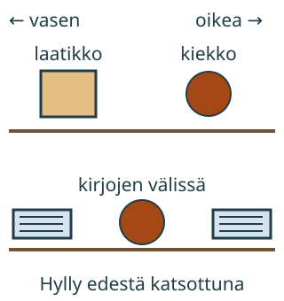

<link rel="stylesheet" href="lesson.css" />


<section data-teaching-step="1" data-lesson-role="teaching-step">
<section class="lesson-intro"><h2>Mihin kiekko kuuluu?</h2><p>Loikka pyytää: laita kiekko laatikon oikealle puolelle. Mistä suunnasta hyllyä katsotaan?</p><p><strong>Harjoittelen sanoja vasen, oikea, yläpuolella, alapuolella ja välissä.</strong></p></section>
</section>


<section>
<section data-teaching-step="2" data-lesson-role="teaching-step">
<h2>Katso hyllyä edestä</h2><p>Tässä katsomme koko ajan hyllyä edestä, samasta paikasta kuin sinä katsot ruutua. Vasen on ruudun vasemmalla. Oikea on ruudun oikealla. Katselupaikka ei vaihdu.</p><figure data-position-figure data-lesson-role="worked-example"><figcaption>Sijainti kerrotaan suhteessa johonkin: laatikkoon tai kahteen kirjaan.</figcaption></figure>
</section>


<section data-teaching-step="3" data-lesson-role="teaching-step">
<h3>Esimerkki: aivan oikealla</h3><p>Aloita laatikosta. Katso samalla hyllyllä oikealle: kiekko on aivan laatikon vieressä. Jos vaihdat vasemmalle, päädyt eri paikkaan.</p>
</section>

<section data-teaching-step="4" data-lesson-role="teaching-step">
<h3>Esimerkki: ylä- ja alapuolella</h3><p>Suoraan laatikon yläpuolella tarkoittaa ylempänä, samassa pystysuorassa kohdassa. Ylähyllyllä sivussa oleva esine ei ole suoraan laatikon yläpuolella.</p>
</section>

<section data-teaching-step="5" data-lesson-role="teaching-step">
<h3>Uusi tilanne: kahden välissä</h3><p>Alahyllyllä on kaksi kirjaa. Niiden välissä on vapaa paikka. Siirrä kiekko siihen: se jää kirjojen väliin. Välissä olemiseen tarvitaan tässä molemmat kirjat.</p>
</section>
</section>


<section data-teaching-step="6" data-lesson-role="teaching-step">
<section data-position-work><div data-audience-columns><div data-visual-column><h2>Siirrä itse</h2><p data-lesson-role="question">Ennusta: aluksi kiekko on vasemmassa yläkulmassa. Kun painat <strong>Oikealle</strong>, mihin se siirtyy? Kokeile.</p><p data-position-goal></p><div data-position-scene></div></div><div data-response-column><p><button type="button" data-position-move="up">↑ Ylös</button> <button type="button" data-position-move="left">← Vasemmalle</button> <button type="button" data-position-move="right">Oikealle →</button> <button type="button" data-position-move="down">↓ Alas</button></p><p>Yksi painallus siirtää yhden paikan. Reunasta ei pääse ulos.</p><p><button type="button" data-position-check>Tarkista paikka</button> <button type="button" data-position-next>Toinen ohje</button> <button type="button" data-position-start>Kiekko alkuun</button></p><p data-position-feedback role="status" aria-live="polite">Siirrä kiekkoa nuolipainikkeilla. Tarkista, kun paikka sopii ohjeeseen.</p><details data-lesson-role="hint"><summary>Apua</summary><p>Etsi ensin laatikko tai molemmat kirjat. Osoita kysyttyä paikkaa. Siirrä kiekko sinne. Kiekon omaa katselusuuntaa ei tarvitse arvailla.</p></details></div></div></section>
</section>


<section data-teaching-step="7" data-lesson-role="teaching-step">
<details data-lesson-role="teaching-step"><summary>Lisätutkimus</summary><p>Laita kaksi lelua vierekkäin pöydälle. Katso niitä samalta puolelta aikuisen kanssa. Vaihtakaa sitten pöydän vastakkaisille puolille. Miksi teidän vasen ja oikea voivat olla eri suunnissa? Sopikaa aina, kenen suunnasta puhutaan.</p></details>
</section>


<details class="teacher" data-lesson-role="teacher-note"><summary>Opettajalle: toiminta ja rajat</summary><p>Vuosiluokat 1–2, sijaintisanaston aloitus ilman muodollisia koordinaatteja. Aikuinen voi lukea ohjeet. Älä oleta oikean ja vasemman sujuvaa hallintaa; ruudun nuolet ja samasta katselupaikasta osoittaminen ovat tukea.</p><p>Harjoitus toteuttaa ohjeita viiden sijaintisanan avulla. Ylä- ja alapuoli rajataan tässä suoraan samaan pystylinjaan, vasen ja oikea aivan viereiseen paikkaan samalla hyllyllä. Välissä ei yleisesti tarkoita täsmälleen puolivälissä tai kummankin vieressä; tässä hyllyssä kirjojen väliin mahtuu yksi paikka.</p><p>Offline: aseta rasia pöydälle ja pyydä siirtämään kiekko sen eri puolille. Käytä pystysuoraan vertailuun turvallista matalaa hyllyä. Pysy lapsen kanssa samalla puolella. Näytön onnistuminen kertoo tämän kiinteän näkymän ohjeen toteuttamisesta; se ei todenna suunnistusta, toisen katselukulman hallintaa tai pysyvää osaamista.</p></details>


<section data-teaching-step="8" data-lesson-role="teaching-step">
<section><h2>Lopuksi</h2><p>Anna aikuiselle yksi sijaintiohje. Nimeä myös se, mihin vertaat, esimerkiksi laatikko. Tarkista, että katsotte samasta suunnasta.</p></section>
</section>


